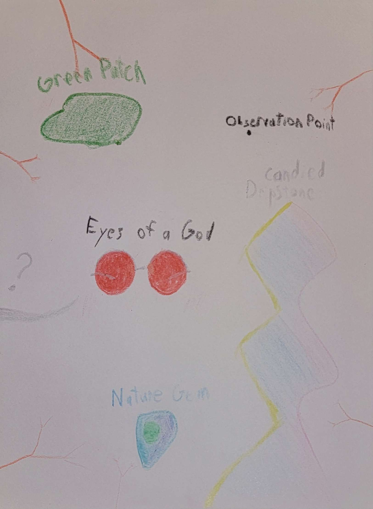
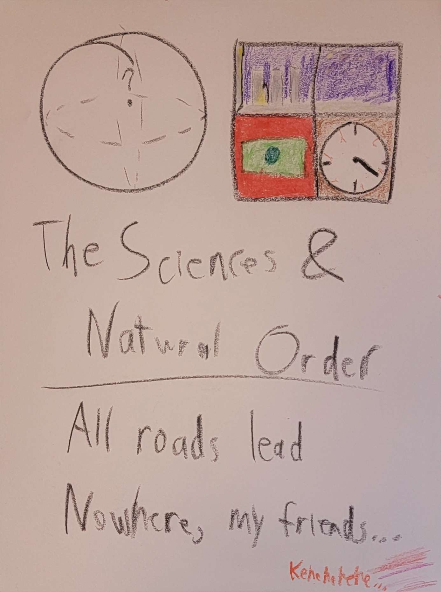
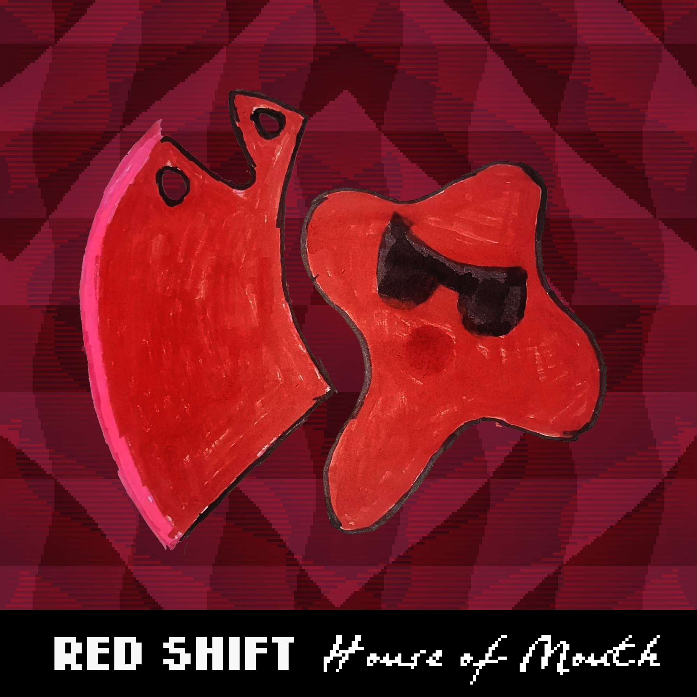

"funky music"
This was made last week, but I've made a few adjustments since then. It's a little funkier now.
"low quality cool drums"
I made this the night of the twenty-first right before going to bed. Actually, to be clear, I had already gone to bed and then decided to transcribe this last minute.
"smovement"
This was made a little earlier on that same day, when I was calling with Felix. There was no intended purpose, simply an idea that came to me, though with much more clarity seeing as I was awake when it struck.
"Scanners SNES RPG Bar"
As the title suggests, I had envisioned this song in the context of a sort of "what if" scenario where Scanners was released as a JRPG on the Super Nintendo years after its theatrical release, with music by Nobuo Uematsu (or similar) with inspiration taken from Howard Shore's original soundtrack. This is simply an idea within that thought experiment, and it would have the game open up in a bar as opposed to a mall, though it still uses the main "Scanners" motif twice. I quite like it, in any case.
"Army Ants"
This is a cover of a section of Stone Temple Pilot's Army Ants, off of their album Purple. It's one of my favorites by the band, although I haven't done the vocals for it yet. I don't know when I will, but I like the instrumental cover I've got so far.
"Stranglehold ~ The Cell"
This is a song that I made for one of Tony's Dark Souls tabletop projects. This is for a campaign he's running in 5e, though he intends for the music to be very Dark Souls-y. I'm planning on pulling a fast one on him and purposely taking as much influence as I can from other things, so it turns out more interesting than it otherwise could. Still, this one is pretty Souls-y, especially with the context that its for a prison.
"Land of Leeches and of Lechers ~ The Sewers"
This was also made for the same Dark Souls 5e projects, though its for a sewers area instead. Tony said he didn't get what I was going for, and as I haven't made much progress on it since, we haven't shown it off to the players yet.
The following is art I made over the course of one night, between the hours of 1 and 3 AM when I should've been sleeping. If I recall, it was Saturday night going into Sunday, so it wasn't that bad.

Text from top left to bottom right reads as follows:
"Green Patch", "Observation Point", "Candied Dripstone", "Eyes of a God", "?", and "Nature Gem"

Text reads as follows:
"?", "The Sciences & Natural Order", "All roads lead Nowhere, my friends..." and "Kehehehehe..."
This last image is album art I've made. I don't know if I'm going to actually make this album, but I certainly want to, though its a little vague in concept. I mean, literally all I've got is this art.
